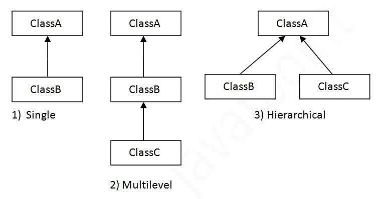
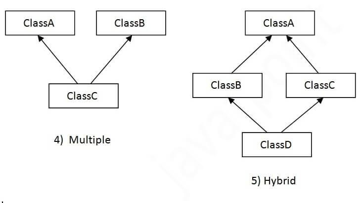
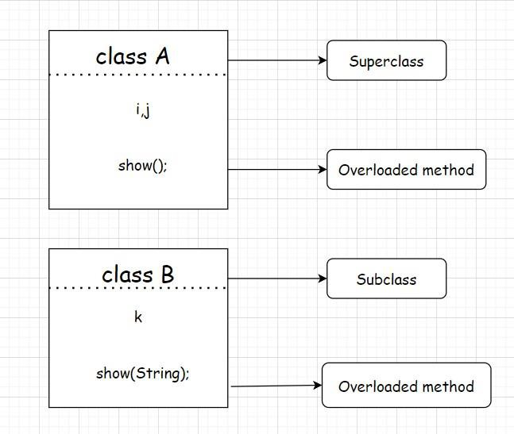

Inheritance is one of the key features of OOP that allows us to create a new class from an existing class.The new class that is created is known as subclass (child or derived class) and the existing class from where the child class is derived is known as superclass (parent or base class).The extends keyword is used to perform inheritance in Java.
For example:
class Animal {
// methods and fields
}
// use of extends keyword// to perform inheritanceclass Dog extends Animal {
// methods and fields of Animal
// methods and fields of Dog
}
In the above example, the Dog class is created by inheriting the methods and fields from the Animal class.Here, Dog is the subclass and Animal is the superclass.
Example 1: Java Inheritance
class Animal {
// field and method of the parent class
String name;
public void eat() {
System.out.println("I can eat");
}
}
// inherit from Animalclass Dog extends Animal {
// new method in subclass
public void display() {
System.out.println("My name is " + name);
}
}
class Main {
public static void main(String[] args) {
// create an object of the subclass
Dog labrador = new Dog();
// access field of superclass
labrador.name = "Rohu";
labrador.display();
// call method of superclass
// using object of subclass
labrador.eat();
}
}
Output
My name is Rohu
I can eat
In the above example, we have derived a subclass Dog fromsuperclass Animal. Notice the statements,
labrador.name = "Rohu";
labrador.eat();
Here, labrador is an object of Dog. However, name and eat() are the members of the Animal class.Since Dog inherits the field and method from Animal, we are able to access the field and method using the object of the Dog.

is-a relationship
In Java, inheritance is an is-a relationship. That is, we use inheritance only if there exists an is-a relationship between two classes. For example,
- Car is a Vehicle
- Orange is a Fruit
- Surgeon is a Doctor
- Dog is an Animal
Here, Car can inherit from Vehicle, Orange can inherit from Fruit, and so on.
On the basis of class, there can be three types of inheritance in java: single, multilevel and hierarchical.
In java programming, multiple and hybrid inheritance is supported through interface only.We will learn about interfaces later.
When one class inherits multiple classes, it is known as multiple inheritance.
Single Inheritance Example
When a class inherits another class, it is known as a single inheritance. In the example given below, Dog class inherits the Animal class, so there is the single inheritance.
class Animal{
void eat(){System.out.println("eating...");}
}
class Dog extends Animal{
void bark(){System.out.println("barking...");}
}
class TestInheritance{
public static void main(String args[]){
Dog d=new Dog();
d.bark();
d.eat();
}}
Output:
barking...
eating...
Multilevel Inheritance Example
When there is a chain of inheritance, it is known as multilevel inheritance. As you can see in the example given below, BabyDog class inherits the Dog class which again inherits the Animal class,so there is a multilevel inheritance.
class Animal{
void eat(){System.out.println("eating...");}
}
class Dog extends Animal{
void bark(){System.out.println("barking...");}
}
class BabyDog extends Dog{
void weep(){System.out.println("weeping...");}
}
class TestInheritance2{
public static void main(String args[]){
BabyDog d=new BabyDog();
d.weep();
d.bark();
d.eat();
}}
Output
weeping...
barking...
eating...
Hierarchical Inheritance Example
When two or more classes inherits a single class, it is known as hierarchical inheritance. In the example given below, Dog and Cat classes inherits the Animal class, so there is hierarchical inheritance.
class Animal{
void eat(){System.out.println("eating...");}
}
class Dog extends Animal{
void bark(){System.out.println("barking...");}
}
class Cat extends Animal{
void meow(){System.out.println("meowing...");}
}
class TestInheritance3{
public static void main(String args[]){
Cat c=new Cat();
c.meow();
c.eat();
//c.bark();//C.T.Error
}}
Output:
meowing...
eating...
Method overriding is a way by which java achieves runtime polymorphism. It can be done only in inheritance. In a class hierarchy, when a method in subclass has the same name and type signature as a method in superclass, then the method in subclass is said to 'override' the superclass method. when an overridden method is called from within the subclass, it will always refer to the version of that method defined in subclass, and version defined by superclass is hidden.
Following is an example of overriding:
//Method overriding
class Figure{
double dim1, dim2;
//constructor
Figure(double a, double b){
dim1=a; dim2=b;
}
double area(){
return 0.0;
}
void showFigure(){
System.out.println("Area for Figure is undefined");
}
}
class Rectangle extends Figure{
//constructor
Rectangle(double a, double b){
super(a,b);
}
double area(){
return (dim1*dim2);
}
void showRectangle(){
System.out.print("Area for Rectangle is:");
}
}
class compute{
public static void main(String ...args){
Rectangle rect=new Rectangle(10.0,15.0);
rect.showRectangle();
System.out.println(rect.area());// this calls area() of rectangle
}
}
Output will be as follows:
Area for Rectangle is: 150.0
This piece of code will call only the area() in class B and print the value. area() in class class A will be overridden during runtime. The showFigure() is inherited by class B. If we want to call area() of class A, then we can access it through super clause.
class Rectangle extends Figure{
Rectangle(double a, double b){
super(a,b);
}
double area(){
return (dim1*dim2);
}
void showRectangle(){
showFigure();
System.out.println(super.area());// this calls area() of class Figure
System.out.print("Area for Rectangle is:");
}
}
Following will be the output:
Area for Figure is undefined.
0.0
Area for Rectangle is: 150.0
Method overriding occurs only when the names and type signatures of the two methods are identical. Else the two methods will be overloaded.
For example, consider this code:
//Methods with differing types signature are overloaded, not overridden
class A{
int i,j;
A(int a, int b){
i=a; j=b;
}
void show(){
System.out.println("i= "+i+" and j= "+j);
}
}
class B extends A{
int k;
B(int a, int b, int c){
super(a,b);
k=c;
}
void show(String msg){
System.out.println(msg+k);
}
}
class Main{
public static void main(String ...args){
B objofB=new B(1,2,3);
objofB.show();// calls show() in A
objofB.show("and k= ");// calls show(String) in B
}
}
Following will be the output:
i= 1 and j= 2
and k= 3
The version of show() in B takes a string parameter which makes its signature different from the show() in class A which takes no parameters. So no overridding takes place.

- Dynamic method dispatch is also known as run time polymorphism.
- It is the process through which a call to an overridden method is resolved at runtime.
- This technique is used to resolve a call to an overridden method at runtime rather than compile time.
Method overriding allows for dynamic method invocation:
- an overridden method is called through the super-class variable
- Java determines which version of that method to execute based on the type of the referred object at the time the call occurs
- when different types of objects are referred, different versions of the overridden method will be called
Illustration of Dynamic Method Dispatch:
class A
{
int i;
void display()
{
System.out.println("In class A");
}
}
class B extends A // Inheriting class A
{
void display()
{
System.out.println("In class B");
}
}
class C extends B // Inheriting class B
{
void display()
{
System.out.println("In class C");
}
}
class compute // Class with main method
{
public static void main(String args[])
{
A a1; // Reference object of class A
B b1 = new B(); // Actual object of class B
a1 = b1; // Reference a1 assigned to b1
a1.display();
C c1 = new C(); // Actual object of class C
a1 = c1; // Reference a1 assigned to c1
a1.display();
A a11 = new A(); // Actual object of class A
a1 = a11; // Reference a1 assigned to c1
a1.display();
}
}
Output
In class B
In class C
In class A
This program creates one superclass (i.e., class A) and two subclasses of it (i.e., class B and class C). Subclasses B and C override the display() method declared in A. Inside the main() method in class compute, objects of classes A, B and C are declared. A reference variable of A, called a1, is declared.
The program then assigns a reference to each type of object to a1 and uses the reference to invoke display().
The version of display() executed is determined by the type of the object being referred to at the time of the call.
Example of a program using Dynamic Method Dispatch:
Program in java to define a class Shape which has data member “area” and a member function showArea() with derived classes - Circle and Rectangle, and display the area of Circle and Rectangle.
class Shape
{
int r1, r2;
Shape(int i, int j)
{
r1 = i;
r2 = j;
}
double ShowArea()
{
System.out.println("\nArea Undefined");
return 0;
}
}
class Rectangle extends Shape // Inheriting class Shape
{
Rectangle()
{
super(3, 4);
}
double ShowArea()
{
System.out.print("\nArea = ");
return r1 * r2;
}
}
class Circle extends Shape // Inheriting class Shape
{
Circle()
{
super(5, 10);
}
double ShowArea()
{
System.out.print("\nArea = ");
return 3.14 * r1 * r2;
}
}
class p2 // Class with main method
{
public static void main(String arg[])
{
Shape s; // Reference object of class Shape
Rectangle r = new Rectangle(); // Actual object of class Rectangle
s = r; // Reference s assigned to r
System.out.print(s.ShowArea());
Circle c = new Circle(); // Actual object of class Circle
s = c; // Reference s assigned to c
System.out.print(s.ShowArea());
Shape s1 = new Shape(0, 0); // // Actual object of class Shape
s = s1; // Reference s assigned to s1
s.ShowArea();
}
}
Output
Area = 12.0
Area = 157.0
Area Undefined